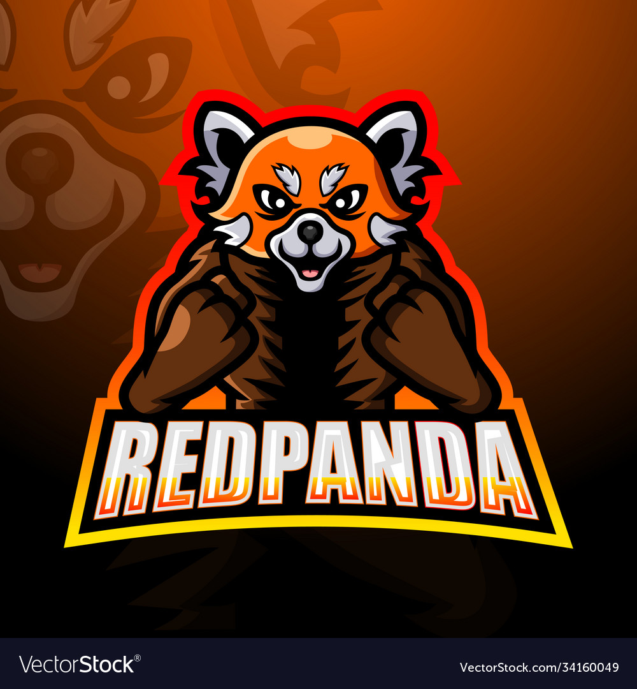

DUBLIN DONS
Mascot name is 'Dublin Dons'.
Which named from one of the Cities in USA which is Dublin and the Don stands for they are unbeatable.
Animal chosen is Red Panda which is cutest. Sport is Cricket.
FUN Facts About Mascot
- They’re vegetarian carnivores. Wait! What? Yep, its true. That is because the word ‘carnivore’ doesn’t necessarily imply a meat-eater but can refer to their biological order.
- They were given the name ‘panda’ first; roughly fifty years before the black and white variety.
- They have a false thumb (an extended wrist bone) which has developed over time to help them climb trees and eat bamboo.

Hear's a link to Index.Html